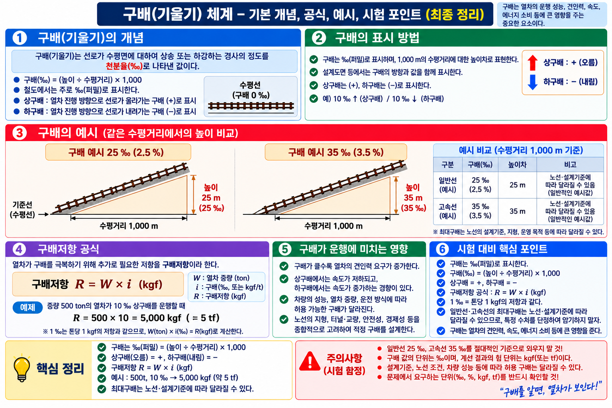
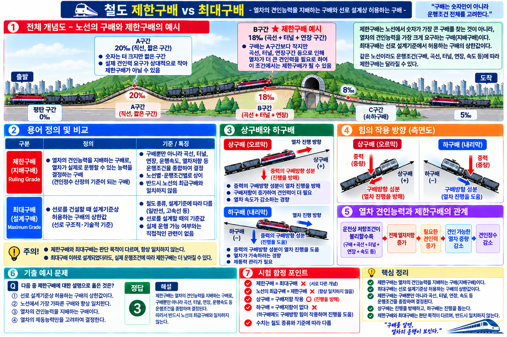
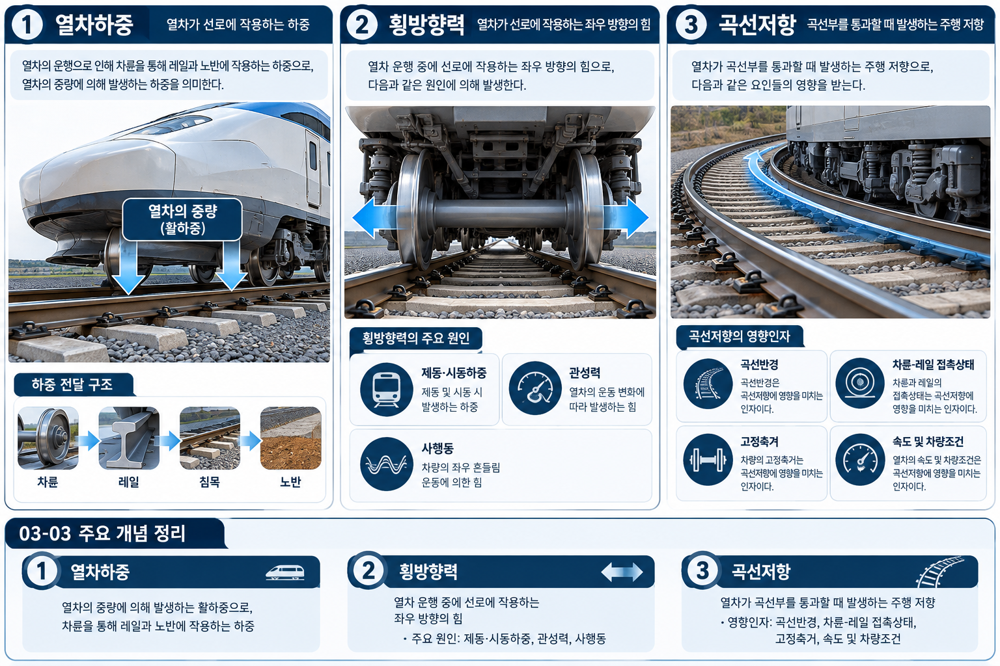

구배(勾配)는 선로의 수평거리 대비 높이 변화 정도를 나타내는 값이다.
철도에서는 ‰(퍼밀, permil)로 표시한다.
예시: 10‰ = 수평거리 1,000m 진행할 때 높이 10m 변화
방향에 따른 분류:
① 상향구배: 열차 진행방향으로 높아지는 구간
② 하향구배: 열차 진행방향으로 낮아지는 구간
③ 수평구배(수평): 높이 변화 없음 (0‰)
상향구배는 열차에 추가 저항으로 작용 → 견인력 요구 증가
하향구배는 중력방향 성분으로 가속하려는 경향 → 제동성능 관리 중요
제한구배: 열차 운전성능 등을 고려해 일반적으로 적용하는 최대 기울기 제한값
최대구배: 특정 선로조건에서 허용되는 최대 기울기
| 선종 | 최대 허용구배 | 비고 |
|---|---|---|
| 일반선 | 25 ‰ | SOURCE 47·55 확인 |
| 고속선 (200 < V ≤ 350 km/h) |
35 ‰ | SOURCE 47·55 확인 |


환산구배란 실제 구배에 곡선저항을 구배로 환산하여 더한 값이다. 열차의 실질 주행 부담을 평가할 때 사용한다.
예시: 실제 구배 l = 25‰, 곡선반경 R = 700m 일 때
le = 25 + 700/700 = 25 + 1 = 26‰
고정하중: 구조물 자체 중량처럼 지속적으로 작용하는 하중
활하중(活荷重): 열차처럼 이동하면서 선로·구조물에 작용하는 동적 하중
| 구분 | 적용 기호 | 적용 노선 |
|---|---|---|
| 일반철도 | LS-22 | 국내 일반 노선 표준 |
| 고속철도 | HL-25 | 고속철도용 |
| 경전철 | LS-18-20 | 경전철·저하중 노선 |
횡방향력(횡압)은 레일을 좌우로 밀어내는 힘으로 탈선 위험과 직결된다. 고속 주행, 급곡선, 급제동 시 특히 크게 발생하며 궤도 이격·변위의 원인이 된다.
| 번호 | 원인 | 설명 |
|---|---|---|
| ① | 차량 무게에 의한 축력 | 하중에 따른 레일 횡압 |
| ② | 레일 압도 SOURCE66 원문 — v1.0 오기 수정 | 레일에 작용하는 횡압력 (v1.0: 「레일 횡압력」→ SOURCE66 원문은 「레일 압도」) |
| ③ | 제동·시동하중 | 급제동·급가속 시 발생 |
| ④ | 관성력 | 속도 변화에 의한 관성 |
| ⑤ | 사행동 | 차륜의 좌우 진동 (사행동 = 뱀처럼 좌우로 흔들림) |

곡선부에서는 직선보다 차량 주행저항이 증가한다. 이를 곡선저항이라 한다.
곡선저항 영향인자 (SOURCE 68):
① 곡선반경
② 차륜과 레일의 접촉 상태
③ 차량의 고정축거
④ 속도 및 차량조건
VERIFY SOURCE 68은 곡선저항 영향인자만 명확히 등록되어 있고, 정량 공식은 SOURCE에서 확보되지 않아 기술하지 않는다.
| 구배 유형 | 열차에 미치는 영향 | 핵심 고려사항 |
|---|---|---|
| 상향구배 | 추가 저항으로 작용 | 견인력 요구 증가, 견인성능 중요 |
| 하향구배 | 중력방향으로 가속하려는 경향 | 제동성능·속도관리 중요 |
구배는 견인성능·제동성능·열차중량·운전속도와 함께 고려해야 한다.
Q1 정답 ②
② 철도 구배는 ‰(퍼밀)로 표시하며, 10‰는 수평거리 1,000m 진행 시 높이 10m 변화를 의미한다(SOURCE 47).
① ④ %는 도로 경사에서 주로 사용. 철도는 ‰ 사용.
③ 10‰ = 1,000m당 10m 변화. 100m당이 아님.
Q2 정답 ③
환산구배 공식 le = l + 700/R 적용:
le = 25 + 700/700 = 25 + 1 = 26‰ (SOURCE 71)
Q3 정답 ③
③ "차량 무게에 의한 수직하중만"은 오답이다. 횡방향력은 수직하중이 아닌 횡방향으로 작용하는 힘으로, 5가지 원인(①축력 ②레일 압도 ③제동·시동하중 ④관성력 ⑤사행동)이 복합적으로 작용한다(SOURCE 66).
①②④는 모두 실제 횡방향력의 원인이다.
② 명칭: SOURCE66 원문 「레일 압도」— v1.0에서 「레일횡압력」으로 오기됨, v1.1에서 정정. ChatGPT 재검수 전 HOLD.